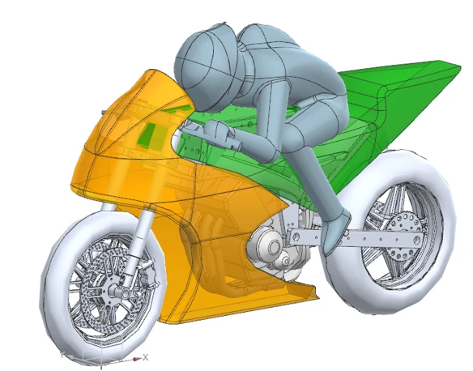
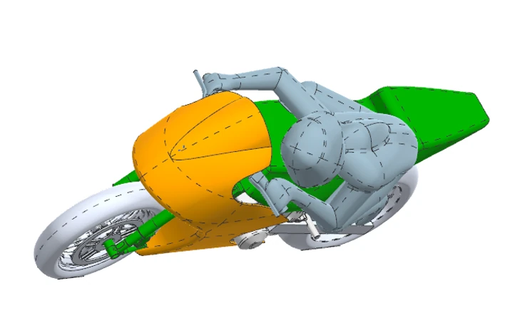

Why this project exists
Most published motorcycle aerodynamics treats the bike upright and in a straight line. That is the condition a tunnel is set up for by default, but it is not where a lap is won. A MotoGP bike spends a large share of its lap time leaned over between 45 and 60 degrees, with the rider hanging off, the bodywork presented to the flow at an angle it was never drawn for, and the wings working in a different orientation to the one they were designed in.
That regime is largely absent from open literature. It is the gap this project aims at: characterising the combined effects of lean angle and yaw on the aerodynamic behaviour of the bike, under representative ground conditions.
How the project came about
Rather than selecting from the standard project list, I co-created and proposed this project. That meant building the case for it, securing approval for the 2026/27 academic year, and then recruiting the six-person team delivering it.
I now lead the project, responsible for technical direction, work allocation and delivery across the full academic year, alongside my own share of the experimental work.
Proposer and project lead. Responsible for the research question, the test plan, the split of work across six people, and delivery to the academic deadlines.
Experimental approach
The study uses a 50%-scale wind tunnel model with rolling road, lean and yaw capability, allowing the combined effects of lean angle and yaw to be characterised under representative ground conditions. The rolling road matters: without it the floor boundary layer grows in a way the real ground never does, and the underbody and wake behaviour that follows is not the one the bike sees.
- 50%-scale model of bike and rider, tested straight and at lean
- Rolling road ground plane, so the underbody flow stays representative
- Lean and yaw both variable, so their combined effect can be separated from either alone
- CFD run alongside the tunnel work, for flow-field detail that balance measurements cannot give


What the project sets out to produce
The intended output is a characterisation of how the aerodynamic loads move through the lean and yaw envelope, rather than a single headline number. The useful result for a vehicle dynamicist is the shape of that trend: where in the envelope the loads change fastest, and whether lean and yaw combine in a way that testing either one alone would not predict.
Live project, running across the 2026/27 academic year. This page gets updated with results and figures as testing progresses.